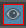

在任何可见的渲染层中，选择一个节点，然后在其“属性编辑器”(Attribute Editor)中的任何属性上单击鼠标右键，可创建绝对覆盖或相对覆盖。
在可见的渲染层中为选定集合创建覆盖
- 在要创建覆盖的渲染层上单击 ，将该层设置为可见。
- 选择要为其创建覆盖的集合。
- 在“大纲视图”(Outliner)中选择要创建覆盖的节点之一，或者在视口中选择该对象，以显示其“属性编辑器”(Attribute Editor)。
- 在“属性编辑器”(Attribute Editor)中，在属性上单击鼠标右键，然后选择“为可见层创建绝对覆盖”(Create Absolute Override for Visible Layer)或“为可见层创建相对覆盖”(Create Relative Override for Visible Layer)。
系统将在集合之下自动创建覆盖。
在可见的渲染层中为特定节点创建覆盖
- 在要创建覆盖的渲染层上单击 ，将该层设置为可见。
- 在“大纲视图”(Outliner)中选择该节点或在视口中选择该对象，以显示其“属性编辑器”(Attribute Editor)。
注： 不得在渲染层中选择任何集合；否则，将为该集合（而非选定节点）创建覆盖。
- 在“属性编辑器”(Attribute Editor)中，在属性上单击鼠标右键，然后选择“为可见层创建绝对覆盖”(Create Absolute Override for Visible Layer)或“为可见层创建相对覆盖”(Create Relative Override for Visible Layer)。
系统将在可见层中自动创建包含该节点的集合及其相应覆盖。为了便于识别，默认情况下，该集合以 _nodeName_col 模式命名。
注：
通过单击覆盖上的  ，可以启用或禁用覆盖。这样，您可以轻松体验不同覆盖的效果。
，可以启用或禁用覆盖。这样，您可以轻松体验不同覆盖的效果。
此外，还可以通过使用鼠标中键将属性拖放到“特性编辑器”(Property Editor)，以创建覆盖。另请参见在渲染层中为集合创建覆盖。
通过创建覆盖向层添加对象
除了为可见的渲染层中当前存在的对象或节点创建覆盖之外，还可以通过一个步骤为当前存在于可见渲染层外部的节点创建覆盖，并将其添加到可见层。
- 单击渲染层上的 ，将其设置为可见。
- 在“大纲视图”(Outliner)中选择该节点或在视口中选择该对象，以显示其“属性编辑器”(Attribute Editor)。
注： 不得在渲染层中选择任何集合；否则，将为该集合（而非选定节点）创建覆盖。
- 在“属性编辑器”(Attribute Editor)中，在属性上单击鼠标右键，然后选择“为可见层创建绝对覆盖”(Create Absolute Override for Visible Layer)或“为可见层创建相对覆盖”(Create Relative Override for Visible Layer)。
系统将在可见层中自动创建包含该节点的集合及其相应覆盖。换句话说，该节点也已添加到可见层中。
注：
创建覆盖之后，层可见性图标  周围可能会显示红色边界，反映层信息已更改。若要使覆盖反映在视口或渲染中，请单击该图标。